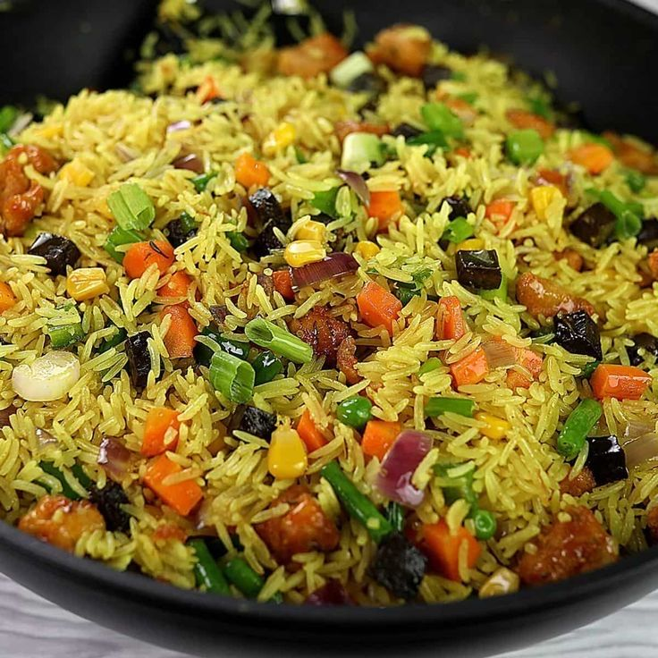

Special Fried Rice is a colourful and tasty rice dish prepared with sweet corn, carrots, green beans and delicious seasonings.
The rice is carefully prepared to give it a rich flavour and attractive appearance. It is suitable for lunch, dinner, parties, celebrations and family meals.
| Specification | Details |
|---|---|
| Main Food | Fried Rice |
| Vegetables | Carrot, Green Beans and Sweet Corn |
| Taste | Rich and Delicious |
| Preparation | Freshly Prepared |
Price: N5,000
Back to Home